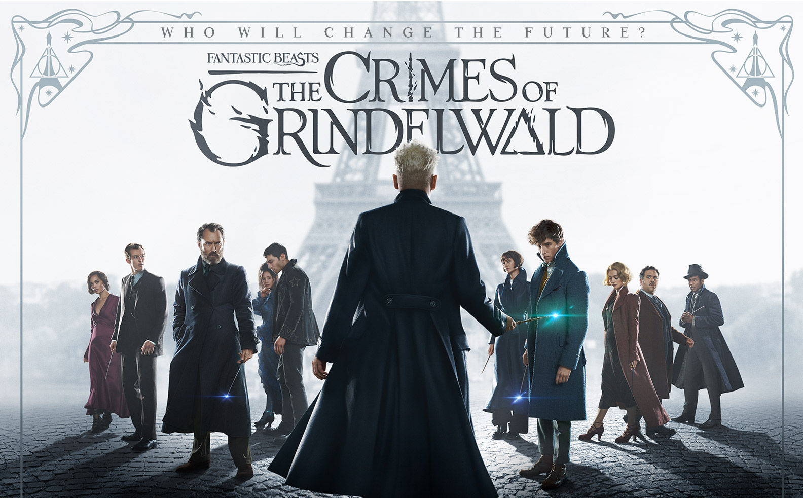
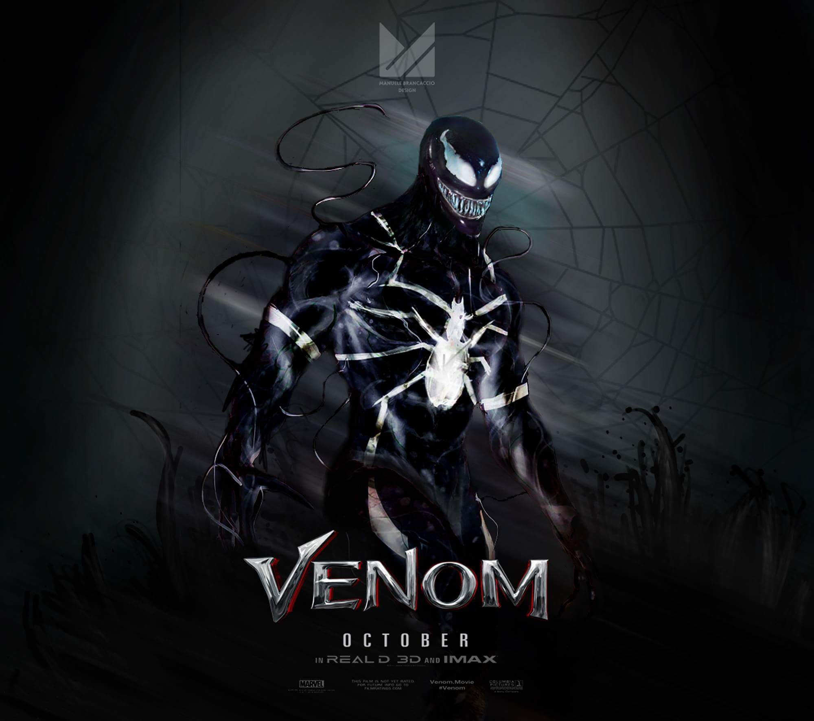
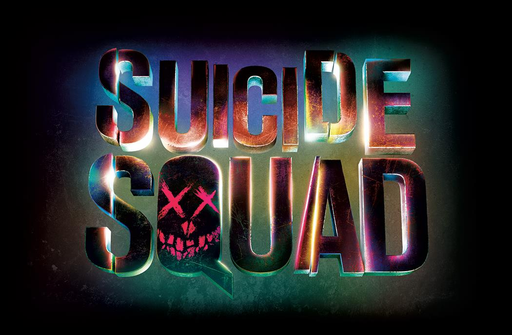
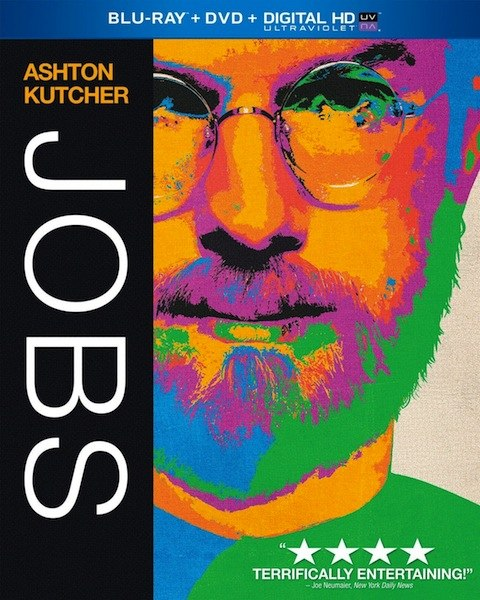

Fantastic beasts The Crime of Grindelwald:
Genre: Fantastic, Drame film
Release date: November 8, 2018 (Paris)
Short description: Newt Scamander (Eddie Redmayne) travels from London to New York City with a briefcase full of magical creatures, or fantastic beasts. When he arrives, his case is inspected by a customs official, but Newt is able to hide the magic from muggle eyes. Some men are inspecting a building downtown that has been torn through
Venom:
Genre: Thtiller, Fantastic, Superhero film
Release date: October 5, 2018 (USA)
Short description:Venom is a fictional character appearing in American comic books published by Marvel Comics, commonly in association with Spider-Man. The character is a sentient alien Symbiote with an amorphous, liquid-like form, who requires a host, usually human, to bond with for its survival. After bonding with a human host, the Symbiote bestows its enhanced powers upon the host. When the Venom Symbiote bonds with a human, that new dual-life form usually refers to itself as Venom
Suicide Squad:
Genre: Superhero, Thtiller
Release date: August 5, 2016 (United States)
Short description:It feels good to be bad… Assemble a team of the world’s most dangerous, incarcerated Super Villains, provide them with the most powerful arsenal at the government’s disposal, and send them off on a mission to defeat an enigmatic, insuperable entity. U.S. intelligence officer Amanda Waller has determined only a secretly convened group of disparate, despicable individuals with next to nothing to lose will do.
Ashton Kutcher JOBS:
Genre: Biography
Release date: August 16, 2013(Island Bermud)
Short description: Directed by Joshua Michael Stern, written by Matthew Whitely, shot by Oscar-winning cinematographer Russell Carpenter and produced by Mark Hulme, JOBS details the major moments and defining characters that influenced Steve Jobs on a daily basis from 1971 through 2000. JOBS plunges into the depths of his character, creating an intense dialogue-driven story that is as much a sweeping epic as it is an immensely personal portrait of Steve Jobs' life.